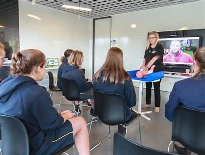

Advanced Diploma of Laboratory Management

This qualification reflects the role of workers who supervise and/or manage laboratory operations within a work area or project team. Job roles include laboratory supervisors, laboratory managers, senior technicians and similar personnel. These individuals are generally responsible for the planning, coordination, quality assurance, recording and reporting of laboratory outputs within their section. This requires significant judgement about work sequences, and choice of appropriate technology and procedures to ensure that products and services meet customer expectations and are provided safely and efficiently in keeping with the enterprise business plan. Under broad direction from scientists/medical staff/engineers, they accept responsibility for the day-to-day operation of the work/functional area. They are often responsible for the effective implementation of operational policies and the technical training of personnel in their work area. They also contribute significantly to the development of these policies through the application of specialised technical knowledge. Work involves multiple and competing demands and frequent interruptions. Immediate decisions are often required. They must be adaptable to deal with the demands brought about by situations involving changes in technology, regularly changing priorities and the demands of clients, suppliers or contractors. No licensing, legislative or certification requirements apply to this qualification at the time of publication.
Estimated fee $9,100 Estimated duration 18 month(s) - 2 year(s) Offered online in Australia
Advanced Diploma of Maritime Operations (Master Unlimited)
This qualification is suitable for people working in the maritime industry seeking an Australian Maritime Safety Authority (AMSA) certification in the capacity of: Master in the maritime industry on ships of any gross tonnage (GT) in any operating area Master less than 3000 gross tonnage (GT) Chief Mate less than 3000 gross tonnage (GT). Please note: RTO to insert on the testamur the job role and specialisation, if applicable, selected from the group choice below Licensing/Regulatory Information Legislative and regulatory requirements are applicable to this qualification: This qualification is currently cited as meeting some of the requirements for certification by AMSA as a Master Unlimited as defined in Marine Orders and the International Convention on Standards of Training Certification and Watchkeeping for Seafarers (STCW). This qualification is required to obtain an AMSA certificate of competency as a Master Unlimited as defined in Marine Orders and STCW. AMSA certification of competency will require: completing an approved program of study that meets regulations STCW A-II/1 and A-II/2 (MAR60220 Advanced Diploma of Maritime Operations (Master Unlimited)) holding or have held certificates of competency as defined in Marine Order 71 qualifying sea service as defined in Marine Order 71 completing STCW short courses as defined in Marine Order 71 holding a valid AMSA certificate of medical fitness having passed a final AMSA assessment meeting any other regulatory requirements as defined in Marine Order 71. Seafarers seeking certification should check requirements with AMSA.